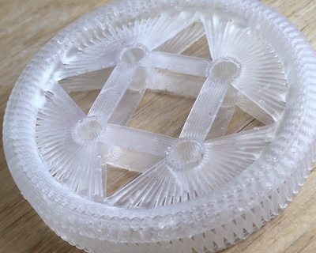
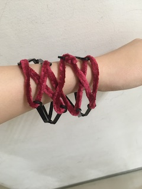
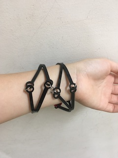
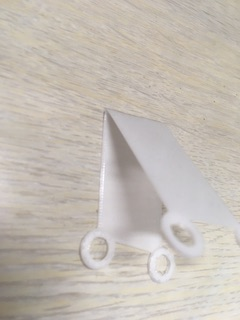
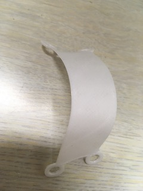
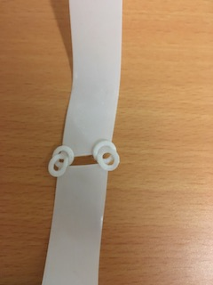

感温性フィラメント（以下TRF）とは温めると造形後の形状を変形できるようになるフィラメント素材をのことだ。
参照サイトこちら
実験０結果(左：変形後)
ダウンロードはこちらから
・実験１ 太いものは作れるか

厚さがあるものはヒーターで全体を温めるのが難しい、もしかしたらバストイなら問題なし？
・実験２ もっと薄くしたらどうか
あまり細かい曲げができないが、大きいカーブなら問題なし。
温めていた時間が不足したのか、大きさが大きかったのかわからないが、すぐ冷えて固まってしまい、加工が難しかった。
熱を加えずに力で無理やり曲げると曲がってしまいました。
実験0と比較すると、０は曲がらず裂け始める。実験１の方は問題なく柔らかくなると元に戻りました。
ジェネレーティブデザインの学習動画は英語しか見つけられませんでしたが、今週日本語のわかりやすい、サンプルデータ付きの学習サイトを見つけたので、実践した。
学習動画
私がジェネレーティブデザインした加工データが下の写真
データは有償版のライセンスのみなので、ジェネレーティブ関連のデータは学生アカウントではみられない。

元のデータはこの形

完成したものをDavintMINIのプリンターで出しました。
形状が複雑なため、あまりこのプリンターは向いていないようだ。
・NETFABBをFABLABのpc２にインストール
MAC使えません。AUTODESKの学生アカウントで無料インストールが可能。
NETFABBの動画学習が見つかった数少ない参考学習動画。
しかし、この動画で紹介されている機能がダウンロードしたバージョンで見つからず、途中で挫折。
既存のデータ（三角や丸など）を加工してどうにかラティス生成に成功はしました。
黄色い四角のボックスになったデータは加工できるデータになっている。
まだ使い方が曖昧なので、後日もう少し学習してから使い方をまとめていきたい。
こちらもDavintNANO,MINIでの加工には向いていない。
https://makerslove.com/7482.html
こちらのサイトにFUSIONのインストール方法が載ってます。
またこちらのサイトにはFUSIONの操作ができるコンテンツもあるので検索してみてください。
また下のサイトではFUSIONの学習動画が配信しているので、試してみてください。
https://www.youtube.com/channel/UC-hTA3j1L9acNiaQrvh0S6w
デザイン思考の一種についてまとめられていたサイト
サイト
サイトのメモ書きです。
ボタンのデータを作り、NETFABBで加工ラティスに加工した。

印刷時間は１１時間。
ラティスのデータを生成して、矢印のところへドラック＆リリース
完成作品(光造形)

こんなにスカスカな構造ですが硬いです。ただし薄いところは脆いです。サポート外す時に折れてしまいました。
データ（stl）here
ギットがアップロードできなかくなったので、新しく作り直しました。
しかし、COMANDからのアップロードができないので、直接アップロードしています。
どうしょうもなくなったら一つの方法として試してみてください。
また、アップロードしたデータの取り消しや編集もブラウザでできます。

今週もう一つ光造形を行なったのは、前回のジェネレーティブデザインのデータ。
斜めの力には強いものができました。
ただし全体的な硬さはあまり感じられません。
斜めに引っ張ると動きます。布の縦と斜めの強度のイメージ。
Davintの造形みたいにボロボロ壊れていきません。
少し試していますが、１から自分で作るのは手間取っており、前回の練習のようにすぐにはできません。
形になるのにもう少し時間がかかりそうです。
3dプリンターのデメリットとして、1回でプリントできるものの大きさに制限があること
→分解して出力し、組み立てる必要がある。
方法
・ブロックの要領でへっこんだパーツと出てるパーツを作る
・ボタンみたいにする
・ボルトで止める（強度が心配、折れそう）
・紐でつける（強度が心配、一箇所に負荷がかかるから折れちゃう）
・リングでつける（見た目が微妙？）
・磁石でつける
・接着剤（残念感がある、私がみた過去事例は接着でつけてるようだhere）
・TRF感温で身体に合わせる
・蛇腹（ジャバラ）で出力して細長いものを出す
その他の課題
・服は脱ぎ着できなければならない（洗濯は特には気にならない）
100均に買い出ししてきました。
・花紙（和紙）卒業式とかの花の紙のやつ
・リング（金属のアクセサリーようのやつ）
・毛糸
計：330円
感温フィラメントでは時間がかかるので、アクリル板で切り出して、ドライヤーの熱で曲げました。
アクリルのデメリットはすぐ折れるところだと思う。また加工温度が高く、火傷しやすいのもデメリット。
メリットは加工が早く、試作をどんどん作れるところ。

もっこもこの毛糸でつなげるバージョンと金属でつけるバージョン。
つけ心地は悪くなく、あんまり気にならなかった。つけてるのを忘れるくらい。
ブレスレットみたいな感覚。ジャラジャラ感がない。
データはhere。イラレに変換する際はこのデータで練習もかねて下のサイトを参考に。

データイメージ図
TRFで出力してみました。
そして無理やり曲げてみました。元に綺麗に戻りました！薄いからかもしれない,加工温度が適正かも知れない。

あと連結できないかと思い、温めるものがなかったので、ケトルでお湯を沸かし直接かけて、柔らかくした。
一瞬でチューイングガムより柔らかくなりました。
ちょっと触るのは熱い。でも数秒以内にすぐ冷えて固まりました。
無事に連結し、無理やり引っ張っても壊れなかった！素晴らしい
データはhere

夏休み開けなかった分の"イラレFUSION連携講座"のレシピを作りました。
よかったら参考にしてください。here